Living review · tested with real money · 26–28 Oct 2026
My BC.Game Review : Based On 10 USDT Deposit, Crash Gambling All Day, 21 USDT Withdrawal.
I was writing about cryptos, casinos and crypto casinos for a good last 10 years. It resulted in a little over 20K FTDs. All that, and I never deposited or spent a sat or wei on crypto gambling myself. All I would do is play the demos and write my content.
I was more of a crypto casino blogger than an actual real-time crypto casino player.
It's time I changed that.
Here on CryptoCasino.Report, I am now doing real things, real playing, real documentation end to end.
This one is my exciting and 50 USDT winnings ride with BC.Game.
Raj· published 28 Oct 2026 · updated 30 Oct 2026
10USDTDeposited
20.25USDTWithdrawn
+50.79P&L (+508%)
186Crash rounds
58.6%Cashout rate
22.37xBest cashout
14Longest loss
Disclosure · no affiliate, no sponsorship, AI used for tooling not writingreadhide
I am not affiliated with BCGame. No one sponsored me or paid me to write this. Also, there are no affiliate links on this page.
Is it ai-written?
No it is not, the text written, the research is all mine.
But, I use claude and opencode+deepseek flash v4 0731 for research, creating charts from transaction data, building tool for provably fair verification.
If you're skimming — here's everything in one view.
And surprise, surprise — there were no promos for real crypto casino games
26th was all about hunting the bonuses, offers for Crash and Plinko
I spent almost all day just on their promos page for casino category in search of the right offer for Crash and Plinko. There were none.
In this search I realized, all the promos on BC.Game were on games (slots, table games) designed and developed by third-party casino game developer companies like NetEnt, Evolution, BGaming and Croco Gaming.
None of the REAL crypto casino games that are provably fair — BC Game Originals like Crash, Plinko and Mines — had any promos.
Every notification, every pop up after you login fresh is directed towards regular online casino games like slots.
For instance this —
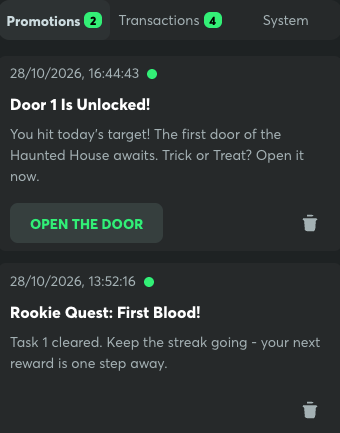
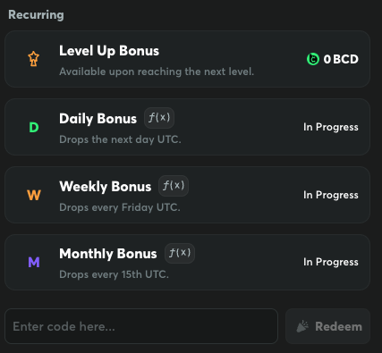
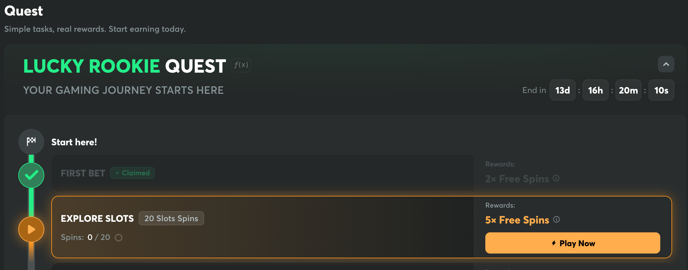
All these notifications and daily offers — without me doing anything in slots department on the site.
And I think it is by design.
If you are coming as new comer, it is more profitable for the casinos — if you become a player of slots or table games [non-crypto online casino games], the games that offer better control and house edge to the casinos.
That said,
How good are those bonuses actually?
The deposit-bonus percentages and that one-month 4-layer deposit bonus are the main tool BC.Game uses to attract you. But on a 10 USDT first deposit, it's really nothing.
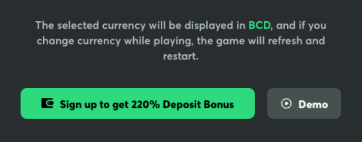
Before signing up, every non-BC-original game was advertising a 220% deposit discount.
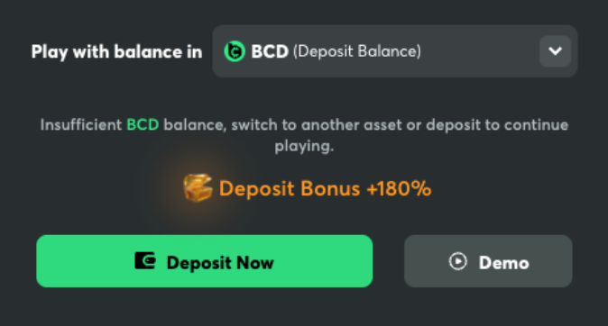
After I signed up (not deposited yet), the deposit bonus dropped to 180%.
When I actually tried to deposit, I understood: the "220%" was 180% deposit bonus + 40% rakeback, framed as one number. The calculator in the sidebar confirmed it as a single "Bonus Match: 220%." The split exists so two big green numbers look more generous than one.
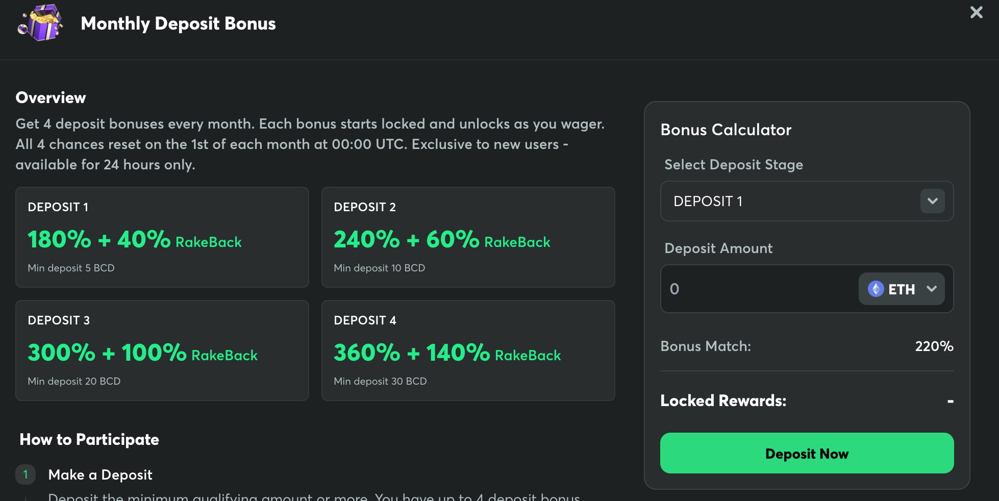
The bonus titles and the amount you could actually win are misleading too. My first feeling was that I could probably win 10K EUR with this promo. But the maximum I could win with it was 1000 EUR.
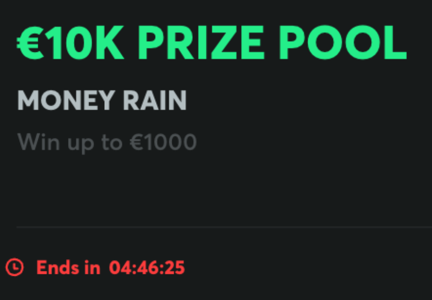
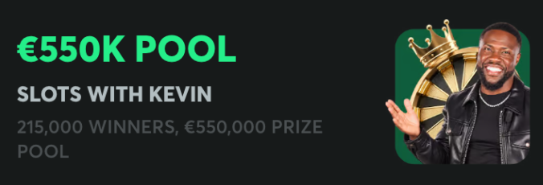
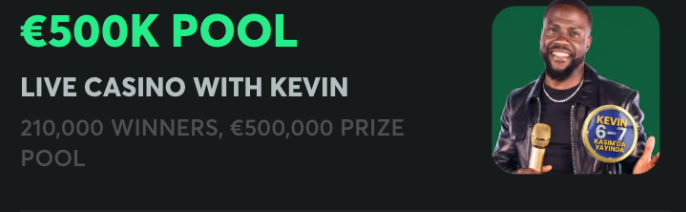
Same bonus — minimal actual winnings when you drill in.
180% + 40% rakeback stacked into one green number. 220% looks bigger than it is.
Either way with the amount I was going, and the way their BONUSES were designed, the 10 or 20 cents worth BCD or BC would be irrelevant.
So, I gave up on their bonuses and promos.
For now, lets get going and start with Crash!
Noob trapUXMoney
26 Oct
The core — starting with sign up
The core part of the writing, testing is dont on 28th October.
The signing, depositing, figuring out crash games settings, playing it cautiously, slowly getting immersed into it, going bet after bet, observing the addictive nature of the game, realizing, booking wins, withdrawing.
I am fairly aware with terminology and proceedings on the crypto world and thought this sign up, depositing crypto would be an easy task. It was rather a multiple option modal that would make you wonder — which path to take.
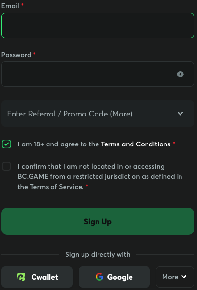
Looking at this sign up modal, these were my thoughts:
Cwallet — I guess its a crypto transfer management platform. I dont have an account there, should I create one?
Should I sign up with my regular email — is it safe and secure?
BC Game promo codes — should I use third-party coupon-site codes, or BC.Game's own promotion page codes?
Given this is crypto + casino, an environement that needs maximum privacy,
I tried signing up with MetaMask
The more button on sign up modal, gave me an option of signup with MetaMask.
I tried it but did not sign up with my wallet. It was not signing up, it was more like integrating bcgame with your metamask wallet. I did not want that. So, I went ahead with sign-up process of using my gmail account.
Now I have an empty account without any crypto or fiat balance to play with.
UXPrivacy
28 Oct · 11:51:23
It's time to deposit
I remember, I have some ETH in my metamask wallet.
BCGame for depositing that, is using Mesh — a multi-coin management, conversion and payment system that connects digital asset accounts, crypto exchanges, and wallets.
[TK — Mesh deposit screen 1 — blob: ref not resolved; best guess legacy bc-game-review-7.png]
[TK — Mesh deposit screen 2 — blob: ref not resolved; best guess legacy bc-game-review-8.png]
So, I went with that option — Mesh > Metamask
And I faced 3 issues with deposits worth mentioning here:
Issue 1 — Pay-by-address vs integrating the wallet
Like with sign up, BC game was again trying to integrate metamask when i tried to deposit ETH. I did not want that. I want to control the aspect of how much money I am putting in BC Game. I prefer control over comfort, so I went with pay by address option, instead of connect bcgame to metamask.
Issue 2 — Additional conversion costs
I wanted to deposit ETH and meshpay or bcgame is designed to convert that to USDT on arrival.
[TK — ETH→USDT auto-convert screenshot — blob: ref not resolved]
This is a problem, I want to evaluate on every crypto casino I am playing on.
Why?
BC Game clearly promotes themselves as ETH accepting crypto casino. This conversion means, they are not.
And, ETH payments already costs us gas percentage and this conversion to USDT would add additional percentage. If you are highroller, it is something to look out for.
When I was go through my metamask account, luckily I have some USDT as well there. I gave up on ETH and decided to go with USDT directly.
Issue 3 — The USDT multiple network thing [TRC20 vs ERC20]
This is more of a tip for crypto beginners than an actual issue.
[TK — USDT ERC20 screenshot — blob: ref not resolved]
So I made sure, I choose right network on Mesh to get right address to do the transfer for depositing.
Related Crypto Tip: TRC20 is generally much cheaper for USDT transfers than ERC20.
I deposited 10 USDT in less than 40 seconds.
In USD $9.99 was going in to BC Game.
Here is my first deposit.
[TK — first deposit screenshot — blob: ref not resolved]
The $0.31 is the gas or ETH network fee — This is not standard or does not depend on how much you deposit.
Its purely the network congestion measurement. Busy network means, higher the transaction cost.
The deposit timeline
Transaction Submitted at 11.51.23 — CET Bitola Time, NMK on 28th October, 2026
[TK — tx submitted screenshot — blob: ref not resolved]
It hit BC game in no time — literally in less that 40 seconds
[TK — deposit credited screenshot — blob: ref not resolved]
The deposit moment40s
Submitted at 11:51:23 CET. Credited at 11:51:56. $0.31 of ETH gas on a 10 USDT deposit. Faster than I expected for ETH mainnet.
Before I move to my crash gambling excitement,
UXMoneyHonest
28 Oct
The one privacy win worth pointing out
BC.Game did not force to reveal my name, email, mobile numner or other identity KYC details. It even gave me a username: p6bterqe6o6l — A random username.
[TK — random username screenshot — blob: ref not resolved]
Privacy winp6bterqe6o6l
Random username. Name, email, phone — nothing is shown on the account. Just an email I can get started.
Thats how much anonymity, I would want from a crypto casino. And BC.Game did just that. Just an email I can get started.
For login security, their email 2FA protection is good enough. The OTP comes to email. NO need of phone numbers, or 2fa apps on mobile phones.
That said,
PrivacySurprise
28 Oct
It's time for some crash gambling
Right before start, I was just browsing around to see what are game settings and crash welcomed me with this massive multiplier.
[TK — pre-game multiplier screenshot — blob: ref not resolved]
Before starting, I wanted to make sure, whats the environment is like. Crash is a very fast paced game that depends a lot on your timing. So the first thing I checked was for keyboard shortcuts on the app and responsiveness.
First with shortcuts: You can find them on settings icon in the bottom left corner on the app.
[TK — shortcuts panel screenshot — blob: ref not resolved]
All these key shortcuts work. However, I did not use them this round. I was lost in the game. But, next time, I will use them and update this section with my experience.
UX
28 Oct · 13:48 – 17:34
Playing Crash for 4 hours…
I played 186 rounds of crash, in 3hours, 46m. With a small bankroll of 10USDT, I was able to get the excitement and expereience of staking 265.28 USDT. It was an exciting experience of winning, loosing and then again winning.
The transactions tab on my BCGame account have all my details:
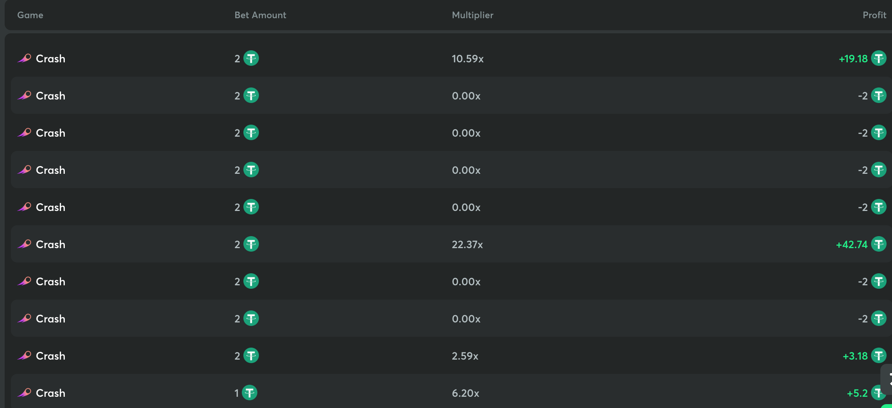
I curated a csv out that table and analysed it with a simple python script.
Here are the details —
Deposit landed: 11:51:56 CET, 28 Oct 2026
First bet placed: 13:48:01. That's 1h 56m after the deposit. I was browsing the game, looking for auto bet settings, options with strategies I can use with the game, trenball vs classic options. I decided to with simple classic thing without any complex auto cash out options.
Last bet placed: 17:33:46
Active play window: ~3h 46m
Rounds played: 186
Minimum Bet 0.10 USD, Maximum Bet: 6.20 USDT, Mean around 1.4 USDT.
Wins (Pulled before crash): 109 — 58.6%
Losses (crashed before I pulled): 77 — 41.4%
Total staked across all 186 rounds: 265.27 USDT (yes, I bet 26x my bankroll over the day — that's what happens when you keep winning)
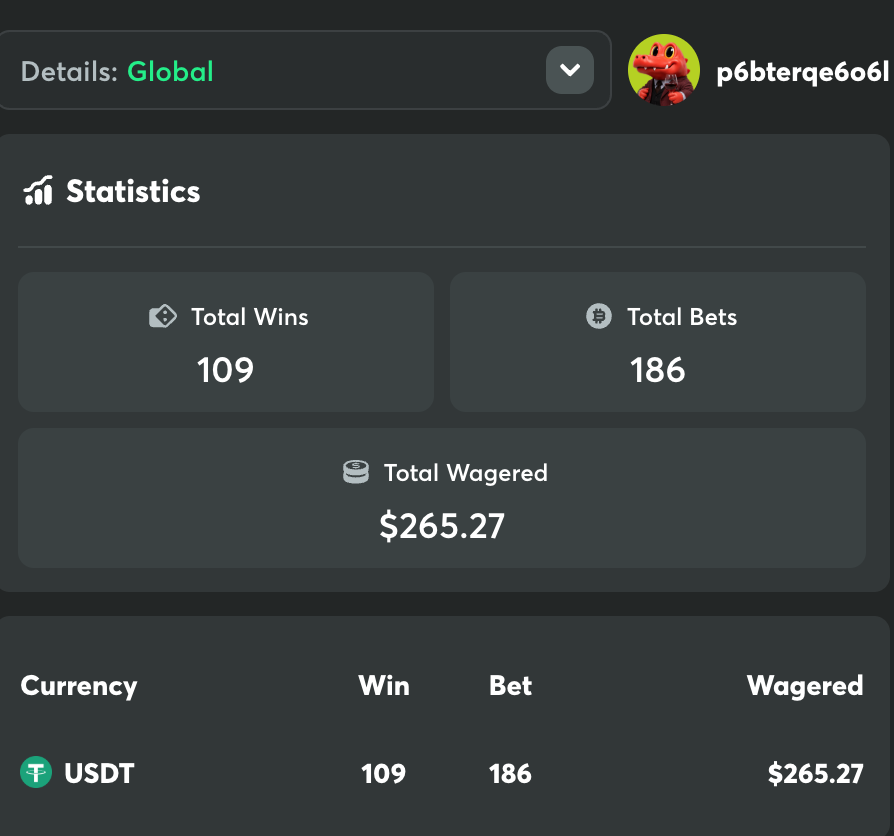
Total received back from cashouts: 316.07 USDT
Peak balance: 60.79 USDT at 17:34:32
Final balance after quitting: 60.79 USDT
Real Wins: +50.79 USDT (+508% on a 10 USDT bankroll)
The play — started cautious but reached risky levels
When I started this playing and writing experiment, I did not want to play long or scale it this much. Just wanted to test it for a hour, document the experience.
But it went on for 186 rounds.
When I realized and looked at the logs, I was surrised to see that I had over:
30 rounds under 0.50 USDT (the "feeling it out" phase)
40 rounds between 0.50 and 1 USDT
34 rounds between 1 and 2 USDT
78 rounds between 2 and 5 USDT (where I spent most of the session)
4 rounds at 5+ USDT
And only then I understood, the vibe was real, the addictive nature was real. The growth appetite for risk over time was real. Probably this is how the house edge works. And this is probably how recreational players slowly enter that non-recreational dangerous mode.
Biggest cashouts — all in less than 25 mins
Time
Stake
Payout
Multiplier
17:30:46
2.00 USDT
USDT 44.74
22.37x
17:33:46
2.00 USDT
USDT 21.18
10.59x
17:03:42
2.00 USDT
USDT 18.32
9.16x
17:13:15
2.00 USDT
USDT 15.58
7.79x
The 14 round in-a-row CRASHING (and the recovery)
After playing for hours, I wrongly thought, I kind of got hold of the logic. I had some extra wins to burn, so wanted to see how far I can go with 2USDT. The aim was clear — AIM for big multiplers.
Crashed before cashout for 14 rounds from 17:17:52 to 17:23:57, each round at 2 USDT. The biggest loosing streak. I went down all the from from 30odd USD to 2 something USDT. Down by 28 USDT in six minutes.
The 22x Recovery — I almost gave up, wanted to withdraw the rest and document the withdrawal process. But then, luckily that one last ride hit had 22.37x cashout.
Second-longest streak: in between 17:05:19 and 17:08:31, I had 7 losses in a row. The bets were between 2-4USDT. I was down by 26 USDT in 3 mins.
The drowning14
losses in a row, 2 USDT each. Six minutes. Down 28 USDT.
17:17:52 → 17:23:57
The recovery22.37x
One last ride on 2 USDT. 44.74 payout at 17:30:46. The game you cashed out of is the game you walked away from.
Second-longest streak7
Losses in a row, 2–4 USDT. 3 minutes. Down 26 USDT. 17:05:19 → 17:08:31.
All of these exciting and enthralling action happened in that final hour. The transactions log clearly show that I was taking calculated risk till last hour. In that last hour, it was all emotional engagement. The per round bets went up with ever 10 odd rounds. Something to SAY OUT LOUD!
The one glitchy ride on BCgame Crash
I played 186 rounds and there was just one glitchy round.
Was not sure what exactly happened, but the UI flickered and didn't respond the way the previous couple of hundred rounds had. Thought its worth keeping in the review.
On the same note, there was another ride that needs mentioning.
1 in a million chance click — my click out and crash happened at same time.
May be a biased call but ot felt like there was that slight delay between my click of the button and the respone of the game. Felt like that costed me a win of around 2 USDT.
But thats also an UX observation I can make about Crash. It is a game that involves player's reflex, the computer response to mouse clicks, the internet speed and the server response to all these. Even tiniest of a latency can cost money.
The tied click~2 USDT
99% of rounds felt instant. One didn't. I don't know whose fault — reflex, network, server, or UI.
Glitch rate1/186
One flickery UI ride across 186 rounds of multi-player Crash. The rest felt lag-free.
The 80 minute NO CONTROL betting
I remembered it vaguely as my "2 hours of MAXIMUM gaming and ZERO documenting." The transactions log tells me the real story.
In my one day of testing, I spent around 4 hours on and off the gaming mode. Most of the time, I was writing and documenting facts and observations.
For instance, from 14:22:31 to 16:11:31, there is a 109-minute GAP with no bets. That was me researching, chatting with support, or exploring promos.
But, from 16:11:31 to 17:34:32, it was a 140 rounds in 83 minutes. A crash round every 30-35 seconds on average. That was definetly my lost-control window. The one where I stopped writing notes and the game took over.
It was a 2-hour absence followed by an 80-minute surrender.
The lost-control window80 min
140 rounds in 83 minutes. A Crash round every 30–35 seconds. I stopped writing notes and the game took over.
109-min gap before · 83-min cluster after · memory said 2 hrs.
HonestMoney
28 Oct · ~17:30
The come back to senses — the realization
It was after my 10x hit round, I finally realized this — I came with 10USDT bankroll and now I have 60. Thats more like 508% win.
Thats when I was like thats enough of excitement documentation. Let me get back to documenting the boring expereience part. The withdrawals.
Come-back-to-senses508%
10 USDT in, 60.79 USDT peak. One hit after the recovery and I stopped.
Honest
28 Oct · 19:55:16
Withdrawal of 20.25 USDT, no KYC needed, just the email OTP
I made 60, but tried withdrawing 20.25 USDT. The remaining 40.54 USDT I'm leaving on the account to document other crypto casino games Plinko, Mines and Dice.
As for the withdrawal here,
Amount withdrawn: 20.25 USDT
Network used: ERC20 (same as deposit)
No KYC asked: This was actually a surprise. I am aware, how big has BC Game becom in the casino industry. Yet, they are stilll maintaining the anonymous gambling feature intact. Not a single document was needed. In fact they did not even ask me for my name or phone number. All they needed for me to make my small withdrawal was an email OTP to the email I used for sign up.
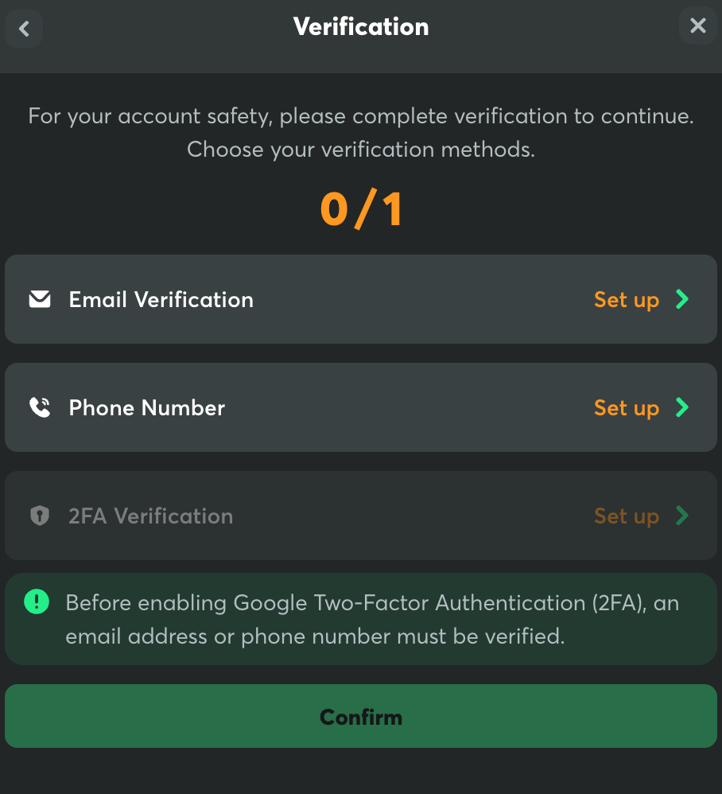
Got the email almost instantly.
Submitted the OTP and processed withdrawal at 19:55:16 CET on 28 Oct 2026
Arrived in MetaMask at 19:55:16 and MetaMask registered the transfer within a few blocks after
Amount I recieved: 20 USDT.
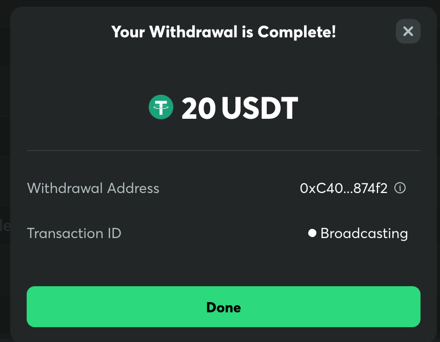
[TK — second withdrawal screenshot — blob: ref did not map]
The 0.25 USDT is ETH Gas: It is network congestion fee. I tried withdrawing an hour before and it was 1USDT gas. And at 19.55 it was 0.25USDT even if was withdrawing 60 or 20USDT.
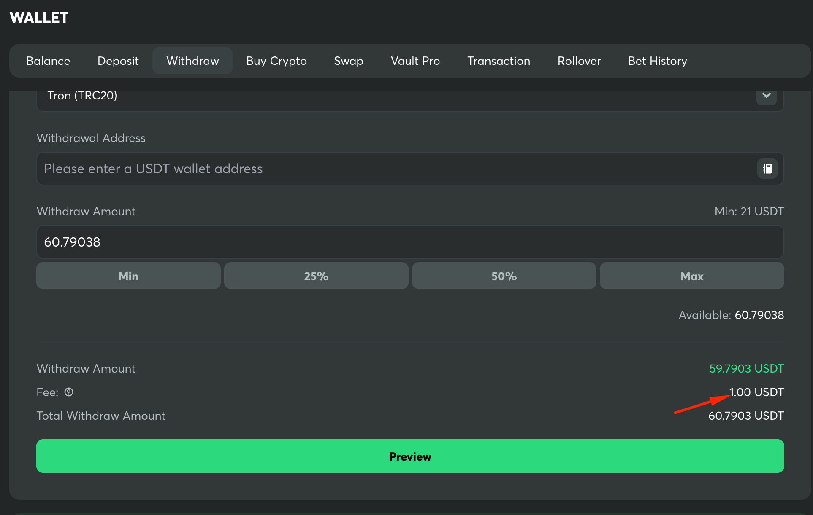
Gas being 1 USDT an hour before.
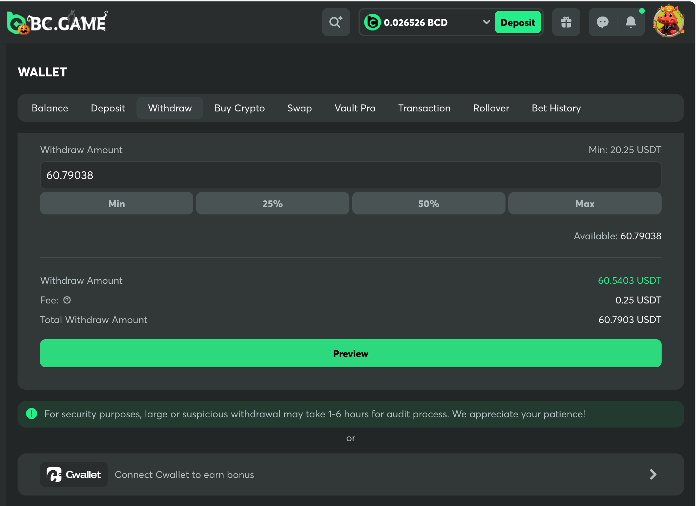
Gas reduced to 0.25 USDT.
TIP: All I had to do was wait till congestion on ETH network cleared.
PrivacySurpriseMoney
My observations — issues, noob traps, tips, surprises and more
8 findings, roughly ordered from "surface noob trap" to "deep structural observation." Each card stands on its own — pick any order.
All 8 findings below are from my own 3-day run. The ones that overlap with the Experience diary carry the same numbers and tags you'll see on the rail.
01
Noob trapUX
BC.Game is not an exclusive crypto casino. It's a crypto casino and also an online casino.
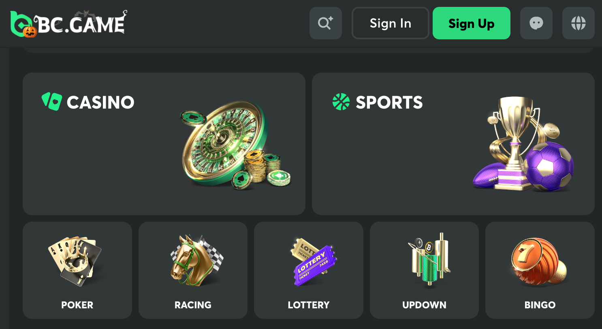
I first thought BC game was a crypto casinos.
But it was MORE an online casino than a crypto casino.
Why?
It has less crypto games that are provably fair and more third party regular RNG casino games that accepts crypto as payment system.
Also, every bonus, every notification, every page, every popup I get after creating an account, was all about slots, slots and slots.
These RNG powered games, casinos can control them better and have better house edge on them.
And, there were no promos what so ever for crypto casino games. On this note, lets also discuss, BC-Originals tab as our observation 2.
02
Noob trapHonest
Not all BCGame Originals are crypto games.
Some of those are actually developed by croco gaming and are not provably fair games.
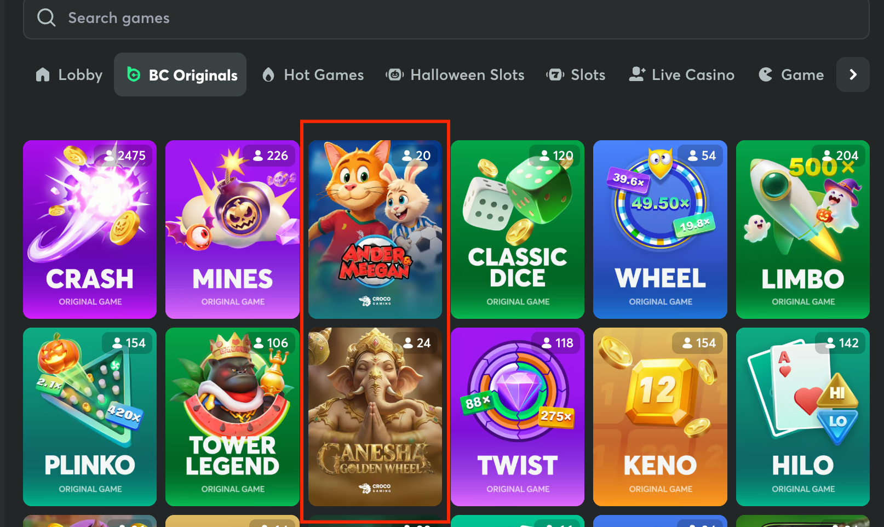
If you are a provable fairness fan like me, you have 8-9 games on BC.Game. Crash, Dice, Hash Dice, Mines, Plinko, Keno, Limbo, Twist Wheel, Double, Fast Crash. All these games are a simple state machine games. A number pops out of simple state machine and you bet against it. And these numbers are verifiable on users end.
Besides these, every other casino game, the crypto tag is just a payment wrapper and nothing more. They are all licensed and audited. So you should probably trust a third-party testing lab's periodic certification. The audit model is old school trust the authority and the provably-fair model are the modern crypto tech you can completely rely on without any doubts.
03
MoneyNoob trap
The useless first-deposit bonus.
On a 10 USDT deposit was worth under 50 cents in real crypto terms,
To be precise, it was 49 cents.
Most of it was anyways auto-committed to BC.Game's own staking engine rather than allowing me to use for crypto casino gaming.
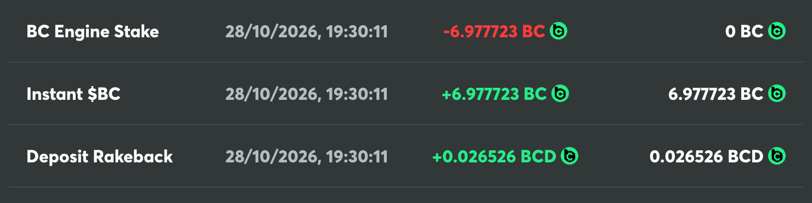
04
Retention trapUXHonest
BCGame daily, weekly bonuses keeps you a active user — a textbook retention design.
Initially, I was disappointed with their bonus being all used up BC.Game's own staking engine, and offers were all slots specific which were not provably fair.
But very soon, they turned it around. Since 28th October, the daily bonuses and weekly bonuses were kicking in every now and then. Made me login everyday.
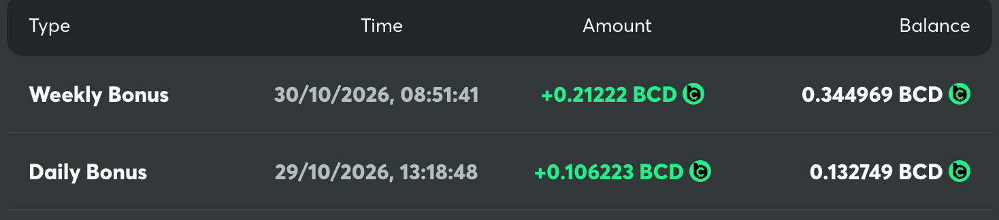
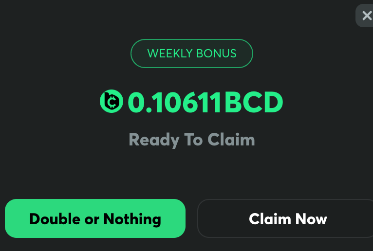
Not just that, they even have their spin on those bonuses. The weekly bonus offered me a gamble to double it. I went for it and doubled that bonus.
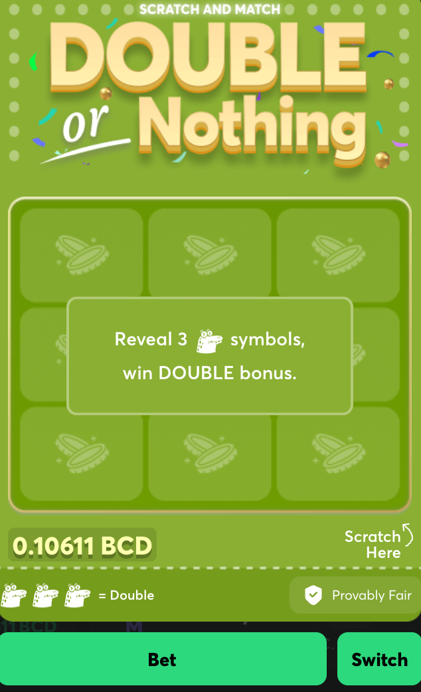
And this led me to another observation. These bonuses and offers are quite an effective retention tools.
These bonuses or offers are definetly not large in money terms. But they are big on consistency. The number of times per day BC.Game hit you to show you a notification, is a Gamified mission.
They keep sending you these every day —
🎃
Haunted HouseThe first door of the Haunted House awaits.
🍬
Trick or Treat?Open it now.
⚔️
Rookie QuestFirst Blood!
🎯
Daily targetYou hit today's target!
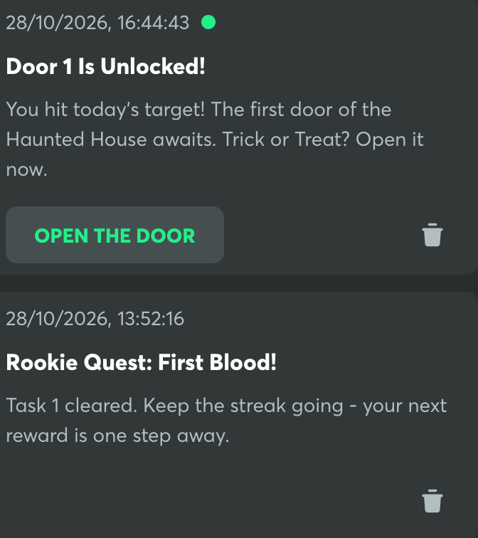
It is text book design to create FOMO and streak anxiety. These missions are all designed to keep you in loop and active. They use it this drip promotion as their second channel of promotion.
Even without claiming the welcome bonus, I'm now being gamified toward some other reward loops.
05
PrivacyHonest
The KYC is optional on small withdrawals. But Highrollers needs this option beforehand.
BC.Game has a KYC tab inside the account settings. I never touched it. My withdrawal went through anyway. For me it was alread ZERO FIRCTION.
The page says Complete KYC for uncapped power and priority payouts.
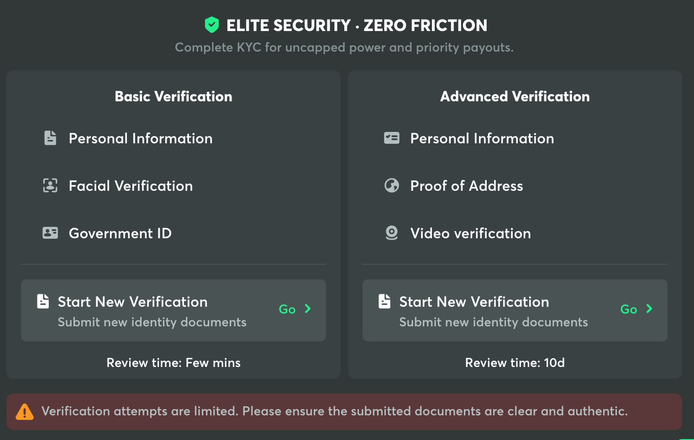
I really was not sure, what it means with priority payouts because, I dont think payouts or withdrawals can be any faster than what I got.
Honestly, I did not understand what cap are they referring too. May be, if I tried to with draw 2000 or 5000 USDT, the probably would kick in their KYC step.
Note For HighRollers — "Verification attempts are limited.Please ensure the submitted documents are clear and authentic." This is the warning on that KYC page.
So if you submit bad details and get rejected (bad photo, wrong document), you may not get unlimited retries. Something to know in advance. Its probably do this step before hand if you are planning to play BIG.
For SMALL deposits and withdrawals with crypto, KYC is OPTIONAL.
06
Noob trapMoney
Finding out BCD is not Bitcoin Diamond
If you're a crypto enthusiast like me, you'd also most probably think BCD in a crypto context is Bitcoin Diamond — a hard fork of the Bitcoin blockchain.
In my first try to deposit ETH from my MetaMask, based on the impression that BC.Game was pushing BCD everywhere, I was this close to swapping ETH to BCD (Bitcoin Diamond). Then luckily I got to thinking:
why on earth is BC.Game SO promoting Bitcoin Diamond?
And that's when I got to see — BCD also means BC Dollar. A coin launched by BC.Game themselves. They created the coin and they even have BC Swap, which allows you to convert other coins to BCD and BCD to other coins.
A crypto-literate noob reads "BCD" and parses it as a known coin. It isn't. It's an in-house token. And here's why the BCD trap is actually worse than it first appears: every deposit bonus percentage, every rakeback, every "monthly" tiered bonus — all of it pays out in BCD, not in real crypto. The marketing shows you a big percentage. The payout is in a token BC.Game themselves control.
07
UXNoob trap
The Provably Fair Button is hidden so deep.
I do not know why but, BC.Game is hiding the "Verify" button for provably fair evaluation.
Not in account settings.
Not in a Fairness tab in the top nav.
But somewhere deep.
Here's the real path:
Go to the Crash game page: https://bc.game/game/crash
Scroll to the bottom — you'll see your previous bets
Click on a specific round. That opens its game-detail page, e.g. https://bc.game/game-detail/1880311774358268555
On that page there's a Verify button next to the hash
Four clicks from a round to the verifier. No tutorial, no tooltip, no explainer anywhere on BC.Game's site that this is how you do it.
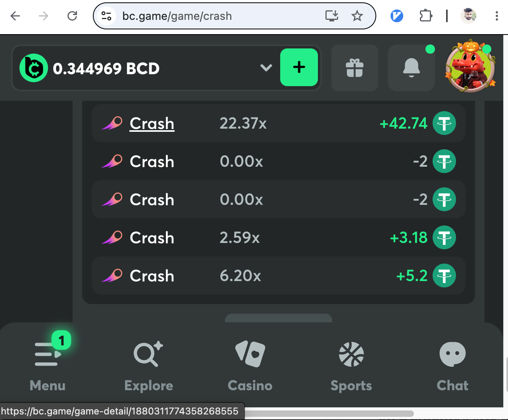
The verifier is accessible — but you have to know to scroll past "Play Now" and look under "Game Detail" to find it. For a first-time crypto-casino user, this is the single biggest UX gap in BC.Game's provably-fair implementation.
08
HonestUX
Customer support — the Nova → Davidson two-stage trick
I almost wrote they have very fast 24/7 live chat. I was asking them how their bonuses work on day 1.
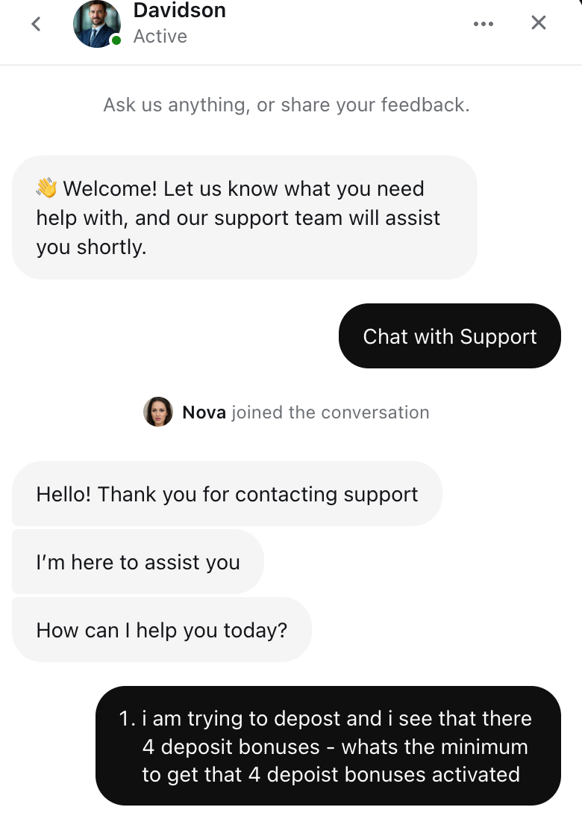
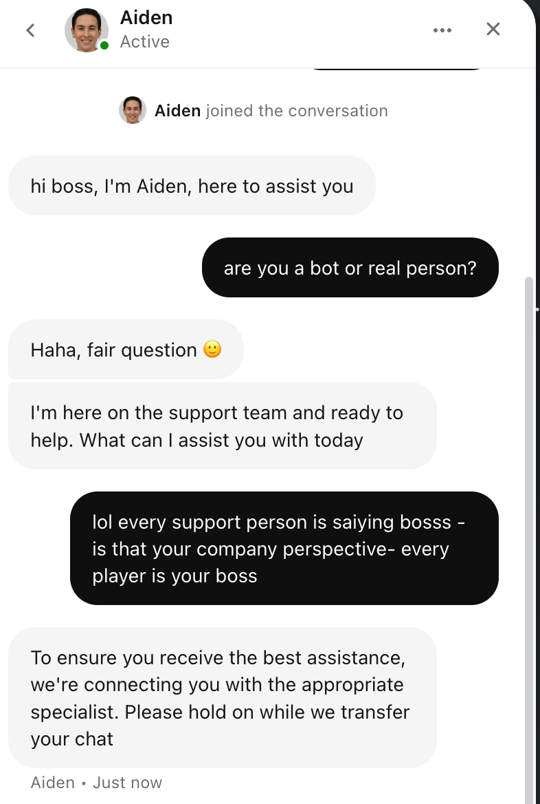
Open the chat. You get an avatar named something like Nova, Aiden, Davidson with a photo of what looks like a real human smiling at the camera.
The design choice is deliberate: the first-touch experience feels like a real person because of the photo and the sub-second response.
It isn't human at all. After about two canned responses the bot concedes the ask is "complex" and transfers to a human — in my case "Davidson".
Transfer to Davidson — the human layer behind the bot.
Davidson's responses are real. Davidson's responses are also no longer instant.
The bot layer is fast and transparently a bot once you spend 30 seconds looking; the human layer behind it is competent and about as fast as any other reasonable crypto-casino support team.
Verifying one Crash round — provably fair, actually proven
Forensic trail: seven numbered steps, from the round I picked to the three agreements that lock the verification. Then an explainer: two trust models, three guarantees, three non-guarantees, and the one honest limit.
I spent a day thinking this would be the hardest chapter to write. "Open the Fairness panel, pull server seed, client seed and nonce, feed them into a verifier." That is how every provably-fair explainer online describes it. That's not how BC.Game's Crash works. Learning that was the first finding.
Dice, Mines, Plinko (the games with per-bet nonces) use HMAC(server_seed, client_seed:nonce). Crash doesn't. BC.Game's Crash runs on a pre-generated hash chain — one long chain of SHA-256 hashes, committed before any round is played, with each round drawing one hash from the chain. There is no client seed. You cannot influence the outcome. The hash for your round existed before you walked in the door. That's not worse than a client-seed model, it's a different trust model.
01
The round I verified — my single best cashout of the day
Time
2026-10-28 17:30:46 CET
Bet ID
1880311774358268555
Chain position (round number)
9,742,375
Stake
2.00 USDT
Cashout multiplier (where I pulled out)
22.37x
Payout received
44.74 USDT
[TK — screenshot of the Bet ID detail page with Result 22.37x, Bet "Classic", Crash 30.95x, Game ID 9742375 and the Game Hash field visible]
02
Where BC.Game actually hides the "Verify" button
Not in account settings. Not in a Fairness tab in the top nav. Here's the real path:
Go to the Crash game page: https://bc.game/game/crash
Scroll to the bottom — you'll see your previous bets
Click on a specific round. That opens its game-detail page, e.g. https://bc.game/game-detail/1880311774358268555
On that page there's a Verify button next to the hash
Four clicks from a round to the verifier. No tutorial, no tooltip, no explainer anywhere on BC.Game's site that this is how you do it. The verifier is accessible — but you have to know to scroll past "Play Now" and look under "Game Detail" to find it. For a first-time crypto-casino user, this is the single biggest UX gap in BC.Game's provably-fair implementation.
03
What the Verify button actually does
Clicking Verify loads an external GitHub Pages verifier with your round's data pre-populated as URL parameters:
[TK — screenshot of the verifier result row showing Game's hash on the left and Bust: 30.95 on the right]
The round busted at 30.95x. I cashed out at 22.37x. Which means two honest things:
I was right to cash out — the game didn't crash at 1.5x or 10x where many Crash rounds do, so my payout was genuine.
I left 8.58x of multiplier on the table. Had I held another second or two, my payout would have been ~61.90 USDT instead of 44.74 USDT. Had I held too long and the bust been 22.00x instead of 30.95x, I'd have lost the whole 2 USDT.
That is the entire emotional engine of Crash in one real data point from my session: the game you cashed out of is the game you walked away from. The game that crashed at 30.95x is a game you never got to see.
05
My own independent recomputation in Python
BC.Game publishing a verifier that tells me their own game is fair is barely verification. The whole point of provably fair is that I can run the math independently. So I did. I pulled the algorithm from the Bustabit lineage (the public ancestor of most Crash games) and ran it on my own machine:
crash-verify.py
import hmac, hashlib
game_hash = "edde058089e09496d9bdd49cee3cc3873095669982247e225edb0cb4cf89c619"
salt = "000000000000000000010283162e089cc99f643ee5043141412e839945afe2f9"# HMAC-SHA256 with the salt as the key (ASCII string) and# the hash as the message (raw bytes), take first 52 bits of the output
combined = hmac.new(salt.encode(), bytes.fromhex(game_hash), hashlib.sha256).hexdigest()
h = int(combined[:13], 16)
E = 2**52
bust = 1.00if h % 33 == 0else ((100 * E - h) // (E - h)) / 100print(f"Computed bust: {bust:.2f}x")
# Output: 30.96x
BC.Game's verifier output: 30.95x. My Python: 30.96x. One cent difference, caused by how the two implementations handle the final flooring/rounding. For every practical purpose, exact match.
06
Three agreements that locked the verification
BC.Game game result30.95xThe round's actual bust.
BC.Game verifier page30.95xTheir own public verifier.
My independent Python30.96x1¢ rounding, same for every practical purpose.
If BC.Game had been dishonest, step 3 would have disagreed with steps 1 and 2.
The chain-regeneration seam. Below the verifier's main form, the page notes three updates at bets #2,561,902, #5,282,960, and #9,614,371. My round is #9,742,375 — in the fourth hash chain BC.Game has used. BC.Game regenerates the chain periodically. That means provable fairness on BC.Game is a per-chain guarantee, not a forever guarantee. Rounds within a chain are fully verifiable. Rounds across chain seams are trust-but-can't-verify. I have no reason to believe BC.Game has done anything wrong here. I also don't have a way to prove they haven't. That's an honest limit of the model.
07
The real headline of this chapter
BC.Game is mathematically provably fair on Crash. The hash was committed. The salt is a Bitcoin block hash nobody could have predicted. The formula is public. My independent recomputation agrees with BC.Game's verifier agrees with the actual round result. That part works, and it is a genuine feature a licensed-only online casino cannot match.
BC.Game is experientially non-obvious for a first-timer trying to use the feature. The Verify button is buried four clicks deep in a page that most new users never scroll to. The verifier output ("Bust: 30.95") lands on the screen with no explanation of what the user is looking at. The salt field is auto-filled with a long hex string that looks like garbage to anyone who doesn't know it's a Bitcoin block hash. This gap is exactly what my planned open-source verification tool is for.
What provable fairness actually proves (and what it doesn't)
A plain-English walk through the trust model, written for a reader who clicks "Verify" and sees "Bust: 30.95" and has no idea what they're looking at.
Explainer
Two trust-model families
Family A — Client-seed-and-nonce
Dice, Mines, Plinko, Wheel
The house commits to a server seed hash. You, the player, provide a client seed (you can change it). Each bet has a nonce that increments. Each round's outcome is HMAC-SHA256(server_seed, client_seed:nonce) run through a game-specific formula. You can rotate the server seed any time to force the house to reveal the old one, and verify the hash commitment held.
Family B — Pre-generated hash chain
BC.Game Crash
The house generates one secret seed S and chains SHA-256 hashes from it: H₁ = SHA256(S), H₂ = SHA256(H₁), out to 10 million hashes. The final hash is published publicly before any round is played — that's the chain's commitment. Rounds are played backwards through the chain. Each round's bust multiplier is computed from that round's hash + a public salt. No client seed. The player doesn't influence the outcome.
Why the difference? Games that need per-bet unpredictability on a short timescale (Dice, Mines) can afford the overhead of per-bet HMAC. A fast-paced game like Crash — where thousands of players all watch the same round simultaneously — needs the hash chain so everyone sees the same multiplier at the same time without the house doing per-player math. Both models are mathematically sound. The chain model gives up player influence in exchange for shared-game speed. That's a real trade-off, not a flaw.
Explainer
Three guarantees it delivers · three it does not
Three guarantees provable fairness delivers
Commitment honesty.The house committed to the hash before your bet. They can't rewrite history after seeing what you did. If you can regenerate the committed hash from the revealed seed, you have proof.
Deterministic outcome.The multiplier (or dice roll, or mines pattern) is derived from the hash by a published formula. Same inputs → same output, always. No fudging.
Independent verifiability.You can run the formula yourself, in your own browser or on your own machine, and compare. If you get the same answer as the game did, the chain holds.
Three things it does NOT prove
It doesn't verify the house edge is in your favour.BC.Game's Crash formula builds in ~1% house edge via the % 33 → instant bust branch. The formula is public. You get to verify the house ran the formula correctly, not that the formula is on your side. Over thousands of rounds, that 1% is how the house wins.
It doesn't verify UX.Nothing in the math stops the game from preloading the next bust point and animating the chart dramatically to make it look like a thrilling race. The number is honest; the feel is still showbiz.
It only works for the games with a Fairness panel.Most of BC.Game's catalogue (slots, live dealer, game shows) runs on third-party RNGs with no provably-fair path.
Explainer
The salt is a Bitcoin block hash — the elegant part
19 hex leading zeros = 76 zero bits → signature of a Bitcoin block hash from the 2024–2026 era.
Count the leading zeros: 19 hex characters = 76 zero bits. That is the signature of a Bitcoin block hash from the 2024-2026 era.
When BC.Game committed its Crash hash chain, they named a future Bitcoin block to supply the salt. At the moment of commitment, that block hadn't been mined yet. Nobody — not BC.Game, not a miner, not me, not anyone on earth — could have predicted what the salt would turn out to be. Once Bitcoin mined that block, the salt was permanently locked in.
This closes an attack that would otherwise exist. Without a future-block salt, BC.Game could theoretically generate many candidate chains in private, compute the resulting bust multipliers for each one, and publish the chain that happens to produce the house-friendliest sequence of busts. With a future-block salt, they can't. Any chain they commit to will be hashed against whatever salt the Bitcoin network produces, which they can't control. The honesty is forced by the choice of salt source. This is a classic Bustabit-era design and it is, in my opinion, the single most elegant trust engineering in crypto gambling.
Explainer
The chain seam — the one honest limit
BC.Game's verifier page notes three updates at bets #2,561,902, #5,282,960, and #9,614,371. My round #9,742,375 sits in the fourth chain. Rounds within a chain are mathematically locked to that chain's public commitment. Rounds across chain boundaries are not — each new chain is a fresh commitment, and whether BC.Game properly committed each new chain publicly and in advance is something the verifier itself cannot prove. Honest ceiling of the trust model.